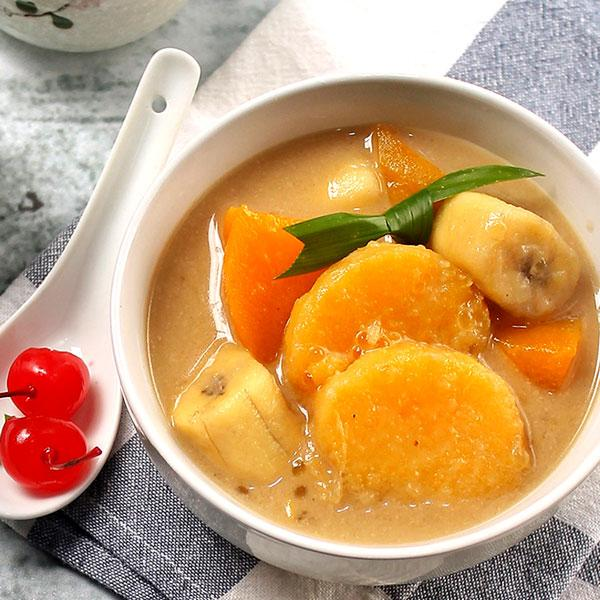

Kolak
Kolak is an Indonesian dessert based on palm sugar or coconut sugar, coconut milk, and pandanus leaf. A variation in which banana is added, is called kolak pisang or banana kolak. Other variations may add ingredients such as pumpkins, sweet potatoes, jackfruit, plantains, cassava, rice balls, and tapioca pearls. Wikipedia